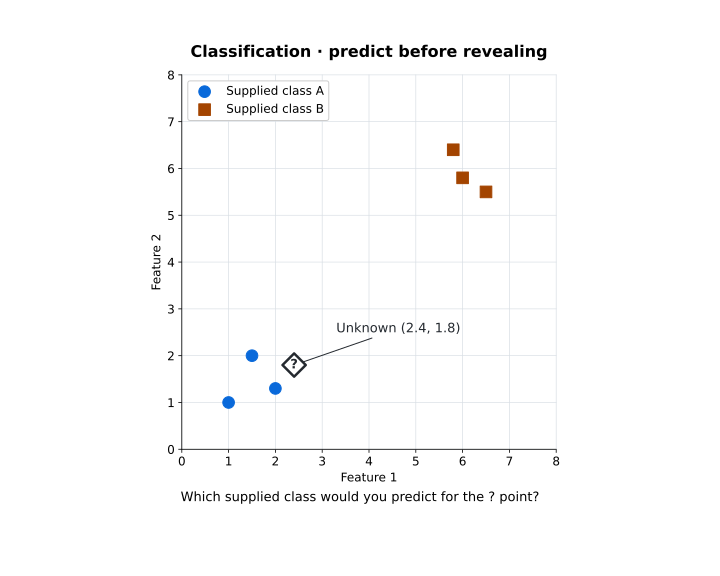
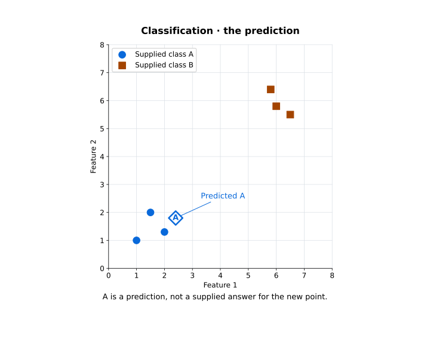
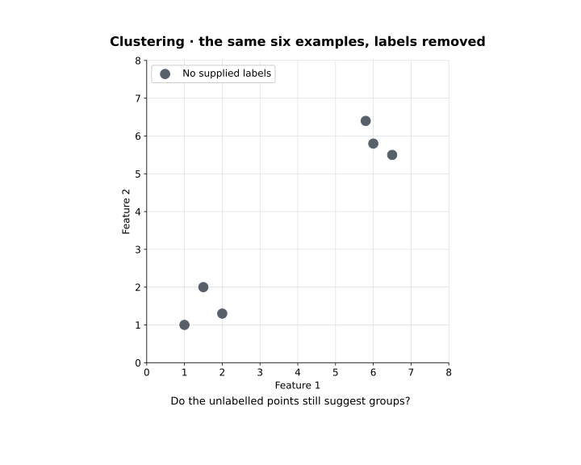
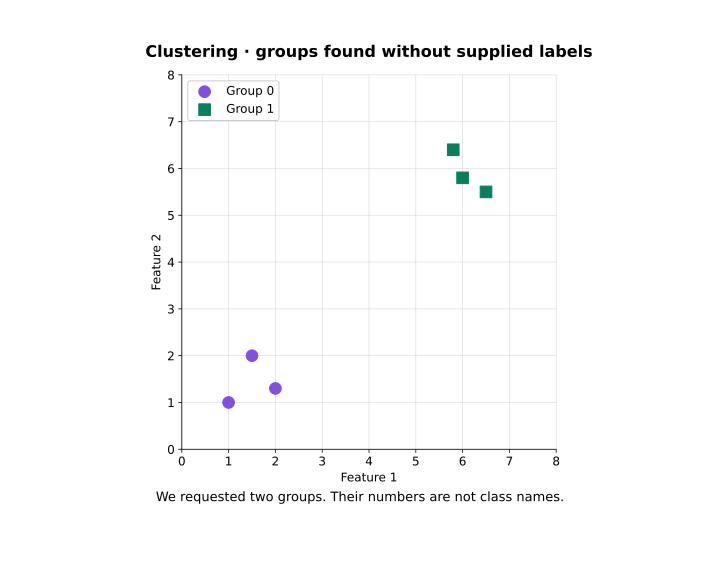

From rules to learning — what changes when the machine learns from experience?
Suppose we want to separate unwanted email from legitimate email. One approach is to write the rules ourselves.
IF subject contains "FREE MONEY" THEN spam
IF message contains 5 or more links THEN spam
IF sender unknown AND text has "urgent" THEN spamThe problem shows up almost immediately. Real behaviour is messy: a legitimate email can contain the word urgent, and a spammer can simply stop writing FREE MONEY. As the world changes, hand-written rules become brittle — and every repair is another rule somebody has to think of first.
Replace some hand-written rules with examples
Suppose instead we have previous messages whose outcome is already known:
message 1 -> spam
message 2 -> not spam
message 3 -> not spam
message 4 -> spamWe give those examples to a learning algorithm. What it produces is the model: the representation actually used to make a prediction or a decision. The algorithm is the procedure; the model is the product.
The change that matters is this:
Part of the decision behaviour is learned from data, rather than specified case by case by the programmer.
That does not mean the computer has been given no rules. We still decide what problem we are solving, what data to collect, how to represent it, which learning algorithm to use, what counts as success, and when the resulting model is safe or useful enough to put in front of anyone. Machine learning changes the source of some behaviour. It does not remove engineering judgement.
Search and learning are different questions
The first half of CT319 asked us to specify how a machine explores possibilities: BFS expands the oldest frontier state, hill climbing moves to a better neighbour, a Genetic Algorithm selects, recombines and mutates a population. Every one of those rules came from us.
The boundary is not absolute. Learning algorithms use optimisation internally, and search methods appear inside larger learning systems. For this part of the module the useful distinction is simpler: search asks how to explore possible solutions; machine learning asks how behaviour can improve from data or experience.
AI, machine learning and deep learning
The formal material also separates three terms that get used as if they were interchangeable.
Artificial Intelligence is the broad field: search and optimisation as much as learning, reasoning and planning. Machine Learning is the family of methods whose performance can improve through data or experience rather than through rules written case by case. Deep Learning is the subset of machine learning built on multi-layer neural networks.
That last relationship matters here, because it is easy to forget: Weeks 2 to 6 were AI too.
Why did machine learning become so prominent?
One reason is the sheer amount and variety of data ordinary systems now produce — transactions, sensors, websites, mobile devices, images and video, text, location traces, industrial equipment, scientific instruments. The formal material introduces this through Big Data, and the useful idea is not "big data means lots of rows". The familiar "Vs" each name a different pressure:
| Idea | The question it asks |
|---|---|
| Volume | How much data is there? |
| Variety | What forms does it take? |
| Velocity | How quickly does it arrive or change? |
| Veracity | How trustworthy is it? |
| Value | Does it contain information useful for this problem? |
A million poor-quality records are not automatically worth more than ten thousand relevant ones. A fast stream of inaccurate data is still inaccurate. A dataset can be enormous and still carry almost nothing about the decision we actually care about.
More data is not the same thing as better learning.
The data also has to be relevant, usable and trustworthy enough for the task.
Why this matters this week
This week is not asking us to forget search. It adds a second way of producing intelligent behaviour: instead of writing every decision ourselves, we let patterns in data shape a model. Which immediately raises the next question.
What exactly counts as data for a learning system?
Data becomes evidence — what exactly do we give the learner?
Start with the formal lecture's loan-approval example. A bank has historical applications, and knows whether each loan was later repaid:
| Income | Savings | Existing debt | Loan later repaid? |
|---|---|---|---|
| €34,000 | €3,500 | €7,000 | Yes |
| €61,000 | €21,000 | €2,000 | Yes |
| €28,000 | €800 | €14,000 | No |
| €47,000 | €5,500 | €18,000 | No |
Each row is an example, or instance. Income, savings and existing debt are features, recorded at application time. Whether the loan was later repaid is the target, and its Yes/No value is a class label.
The ordering there is not a detail:
The features must be available when the new application is considered — before anyone knows its outcome.
A repayment prediction can inform a loan decision. It is not itself an approval rule.
What forms can the examples take?
The formal material draws four useful contrasts.
- Numerical — salary or temperature is a measurement; number of missed payments is a count.
- Categorical — payment type or product category records membership, not a measured amount.
- Time series — hourly demand or daily sales carries an order in time, and that order matters.
- Text — an email or a review needs some representation of its content before anything can be learned from it.
Those categories overlap: a time series is usually made of numerical measurements. Images, audio and graphs need representations too. Week 2's question has not gone anywhere — what must we record for this task?
Raw data is rarely ready to learn from
Go back to the loan table. €35k and 35000 may mean the same income. N/A is missing information, not zero. Duplicated applications and wrong dates quietly distort the evidence.
Preparation means inspecting records, correcting errors, deciding what to do about missing values, representing categories, selecting relevant features, and sometimes scaling or transforming values. Every one of those choices changes what actually reaches the learner.
The formal lecture presents a fuller data-analysis lifecycle based on CRISP-DM and KDD. The part worth carrying this week is the shape of it.
Is an available feature an appropriate feature?
The loan example raises a question worth sitting with. A lender may hold shopping history, location traces, phone records or social-media activity alongside the financial information.
If a feature is available, should the model use it?
Four things are worth checking: relevance to the question being asked, quality of the measurement, potential bias or sensitive proxies hiding inside it, and appropriateness of collecting and using it at all. A feature can look predictive and still be invasive, outdated, or simply unavailable for the next applicant.
Available data is not automatically appropriate data.
Keep that principle here; the broader ethical treatment returns later in the module.
The tool landscape
The formal lecture introduces several tools with different jobs.
| Tool | Useful for |
|---|---|
| Python | general programming, data processing, machine learning and automation |
| scikit-learn | classical machine-learning algorithms behind one consistent Python API |
| R | statistics, data analysis and visualisation |
| Excel | small-scale tabular exploration, calculation and charting |
| Weka | GUI-based experimentation with classical machine-learning algorithms |
Weka appears in the original CT319 material; it is not a required installation this year. The practical demonstrations in CT319 2026/27 use Python and scikit-learn. R and Excel remain useful parts of the wider analytics landscape.
The first choice is the question, not the software. The lecture's analytics categories give a compact way to tell those questions apart:
| Question | What it asks |
|---|---|
| Descriptive | What happened? |
| Diagnostic | Why might it have happened? |
| Predictive | What is likely to happen? |
| Prescriptive | What action should we consider? |
Machine learning contributes to prediction and to pattern discovery. A summary, a chart or a spreadsheet may answer the other two without any learned model at all.
Why this matters this week
We now have the raw ingredients: examples, features, and — sometimes — labels. That last word is where the next question lives. Sometimes we know the correct outcome for past examples. Sometimes nobody does. That single distinction creates the first major division in machine learning.
Learning from answers — what does supervised learning look like?
Take those historical email messages again. For each one, somebody already knows the answer, so the learner receives two things together: the input features, and the known target.
That is supervised learning.
“Supervised” does not mean a person watches every prediction. It means the training examples carry the outcomes the learner is supposed to model.
Classification and regression
The formal material introduces two supervised tasks, and the difference between them is the kind of thing being predicted.
The recognition rule is short: a category means classification, a numerical quantity means regression. That is as far as we take it this week — classification gets a proper treatment next week.
A classification teaser — which class would you predict?
Six labelled examples, two numerical features each. The diamond marked ? is a new example at (2.4, 1.8) — not one of the six, and no answer has been supplied for it.

Would you expect the unknown point to be A or B — and what in the picture supports that?
These two toy features happen to use comparable scales. With distance-based methods, feature scale can change which examples count as "nearest", which is a Week 9 problem.
Run the demonstration yourself:
python -m pip install scikit-learn matplotlib
python learning_demo.py --mode classificationThe window opens on the unknown point. Make your prediction, then click Run and reveal or press Space. The fitted classifier's answer appears on that same point.
The operation at the centre of it is three lines:
from sklearn.neighbors import KNeighborsClassifier
model = KNeighborsClassifier(n_neighbors=3)
model.fit(X, y)
prediction = model.predict(unknown)X is the six coordinate pairs, y is their supplied A/B labels, and unknown is the separate query point. fit(X, y) hands the algorithm the labelled examples; predict(unknown) applies the fitted model to a new one. Everything else in the script is plotting.

The reveal is worth saying out loud: the new example was assigned one of the supplied classes. That is classification. One plausible prediction says nothing yet about performance on any other case — and k-nearest neighbours itself belongs to Week 9.
What did the machine actually learn?
Be careful with the language here. The model did not learn that A is good or that B is bad. It used the relationship between feature values and supplied labels, under one particular algorithm. KNN keeps its training examples and consults them at prediction time; fitting a model does not have to mean discovering an equation.
Change the data and the result can change. Change the features, the algorithm or the labels, and the result can change too. Machine learning gives us a new dependency chain to keep track of:
- data
- representation
- learning algorithm
- model
- predictions
The model is never independent of the choices that produced it. The highlighted step is the only one we usually name when we describe the system.
The loan example becomes supervised learning
Back to the bank. If the historical records hold borrower features alongside a REPAID or NOT REPAID outcome, we have a supervised classification problem, and the learner can try to use those labelled examples to make predictions about new applicants.
Which creates an immediate problem. Suppose the model reproduces every historical label perfectly. Is it good?
Not necessarily — and the last highlight is about why.
Why this matters this week
Supervised learning is powerful because the examples tell the learner which outcome matters. But labelled data is often difficult or expensive to get. Millions of images may exist; that does not mean millions of trustworthy labels exist. Millions of customer records may exist; that does not mean anybody has already sorted them into the groups we care about.
So what can a learning system do when the answers are simply missing?
Different feedback — what does the learner actually receive?
So far the learner received examples and supplied answers. Other settings hand it something different.
| Learning setting | What the learner receives | The question it can ask |
|---|---|---|
| Supervised | examples + supplied targets or labels | Can I predict the target for a new example? |
| Unsupervised | examples without supplied labels | Is there useful structure in this data? |
| Reinforcement learning | actions, consequences and reward from interacting with an environment | Which actions lead to better long-term reward? |
What feedback is available — an answer for an example, no supplied label, or a consequence of an action?
Unsupervised learning is not given class labels. Reinforcement learning receives reward through interaction, which is not simply another flavour of unlabelled data.
Remove the labels — what remains?
Take exactly the same six examples used to fit the classifier and delete y, leaving every coordinate where it was. The classification query is left out too: it was never one of the six.

Can you still see structure? What grouping would you expect, without being told A or B?
Clustering groups examples using patterns or similarities in their features. Notice that the question itself has changed: it asks about structure across the examples, not about the class of one new point.
A clustering teaser — run, then reveal the groups
Open the unlabelled view of the same demonstration:
python learning_demo.py --mode clusteringPredict a grouping, then click Run and reveal. The six neutral points pick up group colours and markers. The key code uses X, and no y at all:
from sklearn.cluster import KMeans
model = KMeans(n_clusters=2, random_state=42, n_init=10)
groups = model.fit_predict(X)We asked for two clusters. The model did not discover how many groups there are — we told it. The fixed settings are there to keep a small demonstration reproducible, and the mechanics belong to Week 10.

Three points land in each group. The separation matches the labelled version here because this toy dataset was built to make the contrast visible; clustering does not, in general, recover known classes.
Running python learning_demo.py with no mode presents both demonstrations in sequence, pausing before each reveal.
Same data, different question
Customer features with churned / did not churn labels support supervised prediction. The same features without those labels can support clustering — finding groups of similar recorded behaviour. What decides between them is the question being asked and the information that happens to be available.
A result with four clusters does not prove there are four objective types of customer. Features, algorithms and settings all influence the grouping, and it takes interpretation to decide whether it is useful. Week 10 returns to exactly that.
A third kind of feedback — reinforcement learning
In reinforcement learning, an agent chooses actions in an environment, and the consequences come back as a reward.
The learner is not normally given the correct action for each situation. It has to discover behaviour that leads to better long-term reward. A game makes the difference concrete: supervised learning might receive many labelled pairs of board position → best move, while reinforcement learning receives a move, then the game continuing, then eventually a win, a loss or a score.
A labelled board position supplies an example of a move. A game outcome supplies a consequence — possibly a long time later. Reward guides learning; it does not usually specify the right action at every step.
Why this matters this week
The word "learning" is covering three quite different mechanisms. A classifier learns from labelled examples. A clusterer looks for structure without them. A reinforcement-learning agent learns from consequences over many interactions. All three raise the same uncomfortable question, and it is the one the final highlight is about: how do we know the resulting behaviour is any use?
Learning is not remembering — how do we know the model learned something useful?
Suppose we train a model on 100 historical examples, and it gets all 100 right. That sounds excellent. Now give it 20 examples it has never seen, and it gets 9 of them right.
100 out of 100 on the training examples is evidence of fit to those 100 cases. It is not evidence that the model will work on anything else.
The point is generalisation
A useful model captures something that transfers beyond the examples it was shown. That ability is called generalisation, and it is the actual target:
- training data
- learn a pattern
- new unseen data
- still useful?
Only the highlighted step is a test. Everything before it is preparation, and it is entirely possible to do all of it well and fail there.
So the goal is not perform perfectly on the data used to fit the model. It is learn enough useful structure to perform well on new cases drawn from the problem we care about.
Overfitting
Overfitting is what happens when a model captures detail or noise that is specific to the training examples and does not transfer. A very close training fit sitting beside poor performance on comparable unseen data is the warning sign.
The analogy is studying by memorising the answers to ten known questions. If the real exam asks those ten questions, memorisation looks brilliant. Change them slightly and the weakness is immediate.
Memorising the training examples is not the same thing as generalising to new ones.
Retaining examples, as KNN does, is not by itself overfitting — the question is always whether the predictions generalise. Week 9 makes this concrete by separating training data from test data when we build classifiers.
What if the learning signal is wrong?
The loan example shows why fitting successfully is not enough. A repayment label may simply be wrong. A dataset may leave out whole groups of applicants. Historical approval decisions may encode unfair treatment. Learning to reproduce those records does not establish that the learned pattern is useful, or appropriate.
- Poor labels or biased historical examples give the learner misleading evidence to fit.
- Weak evaluation gives us misleading confidence in whatever it produced.
- A badly designed reward encourages the wrong behaviour, and does it efficiently.
For clustering, a visually neat grouping is not proof that it means anything. For reinforcement learning, rewarding speed alone can produce something fast and careless. In every case the learner improves against its signal while missing the purpose we had in mind.
A system can technically learn, and still learn the wrong thing.
That is the reason to inspect the data, the feedback and the evidence of usefulness rather than the score alone. The broader treatment comes later in the module.
Why this matters this week
The CT319 progression now extends by one step.
- Week 2 · representation
- Week 3 · blind search
- Week 4 · heuristic
- Week 5 · local search
- Week 6 · population
- Week 8 · learning
The words are new. The habit is not: ask what information the system receives, how that information changes its behaviour, and what evidence tells us the result is useful.